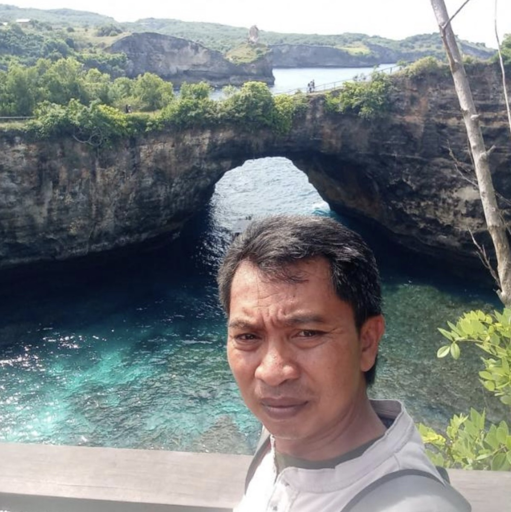

Arsa made our Bali trip so much better than we expected. He wasn't just our driver—he became our local guide. Every day he recommended places we never would have found on our own, from amazing local restaurants to the Ogoh-Ogoh Museum, which ended up being one of our favorite stops. He also shared so much about Balinese culture that every drive became part of the experience. We left Bali feeling like we understood the island much better thanks to him.
Arsa's Bali Tour
Private driver & local guide across Bali
Safe, comfortable days discovering Bali’s landscapes, culture, and hidden gems.
About
Meet Arsa
Hi, I'm Arsa, a local driver and guide based in Bali. I love helping visitors experience the island beyond the typical tourist attractions by sharing its beautiful landscapes, rich culture, and hidden gems.
Whether you're looking for a relaxing day exploring temples and rice terraces, chasing waterfalls, visiting beaches, or creating a custom itinerary, I'm here to make your trip safe, comfortable, and memorable. I pride myself on being punctual, friendly, and flexible, and I'm always happy to recommend places based on your interests.
My goal is simple: to help every guest experience the best of Bali with local knowledge, reliable transportation, and genuine hospitality. I look forward to welcoming you and making your Bali adventure unforgettable!

Experiences
Days shaped around what you love
From sacred temples to quiet beaches, every itinerary is tailored to your pace and interests.
-
01 Temples & rice terraces
A relaxed day among sacred sites, green valleys, and village roads.
-
02 Waterfall trails
Chase cascading falls and jungle paths with local stops along the way.
-
03 Beach days
Coastal drives, sunset spots, and time to unwind by the water.
-
04 White water rafting
An adventurous river run through Bali’s lush tropical landscape.
-
05 ATV ride
Off-road trails through villages, rice fields, and countryside paths.
-
06 Bali Swing
Iconic jungle swings with unforgettable views above the canopy.
-
07 Sunrise jeep tour
Early morning jeep adventure to catch sunrise over the island.
-
08 Bali Zoo
A family-friendly day meeting wildlife in a tropical setting.
-
09 Bali Bird Park
Colorful birds and nature walks in one of Bali’s favorite parks.
-
10 Art Village Tour
Silver smith, painting, and wood carving in local artisan villages.
-
11 Water sports
Beachside activities and coastal fun tailored to your group.
-
12 Sunset dinner at Jimbaran Bay
Seafood by the shore as the sun sets over the water.
Pricing
Simple rates for your day
Prices cover the car and driver only — entrance fees for tourism sites are not included.
-
Full day tour
8 hours · net per car
IDR 780.000 ~ $44
-
Half day tour
4 hours · net per car
IDR 540.000 ~ $30
Text Arsa for more clarification on price — WhatsApp +62 813-3874-5587.

Guest stories
What travelers say about Arsa
Punctual. Friendly. Flexible.
Reliable transportation and genuine hospitality — so you can focus on the island, not the logistics.
Get in touch
Ready for your Bali adventure?
Share your dates, group size, and the places you’d love to see. I’ll help shape a comfortable, memorable day on the island.
Chat on WhatsApp
+62 813-3874-5587